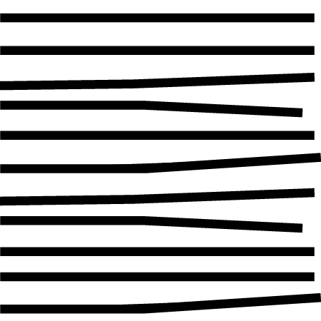
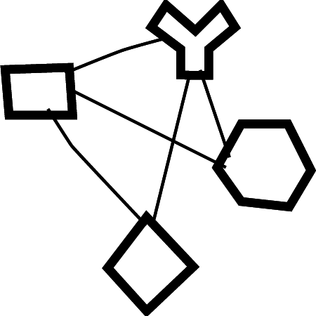

This visualization is part of research project Eisenstein's House (previously called KOLLISIONEN) at Fachhochschule Potsdam and Filmuniversität Babelsberg. It aims to enable exploration of the intellectual cosmos of Sergei Eisenstein through diverse forms of media of Virtual Reality (VR), Information Visualization (InfoVis) and 3D-Sound.
Considering the all encompassing contributions of Eisenstein to the world of cinema and theatre, this information visualization experience displays his contributions through three visualizations: Spiral, Network and Timelines. Each of these three visualizations display dimensions of Eisenstein's life with different aspects as the primary focus. The aim of these three information visualizations is to make the underlying data accessible, comprehensible and experiential for a broad audience ranging from experts to casual. The exploration is further explicated by shared design patterns common across information visualization, 3D-Sound and 3D/VR.
Explore Eisenstein's Life!

Spiral |
The Spiral is a temporal representation of Eisenstein's personal and artistic endeavours. It spans from his birth in 1898 until his demise in 1948, and how the legacy he left has continued until today. The shape of this visualization was inspired by Eisenstein’s film theory of a spherical book. |
|---|---|
|

Timelines |
This visualization displays how different people, places, concepts, works, and other aspects of Eisenstein's life occurred and recurred throughout his life. It displays linear timelines of each of these entities. Each row shows the timeline for a particular entity.. |
|

Network |
Eisenstein contributed to the world of film and theatre through his cinematic masterpieces and through his artistic ideas. During his life, he travelled the world and connected with several notable people in personal and professional capacity. The network view reveals these connections between the people, places, works, and concepts in Eisensten’s life. Each of the symbols used in the network and timelines represents a certain type of entity. |
Data Source: The data used for this visualization is primarily from the book Sergej M. Eisenstein - Materialien zu Leben und Werk by Werner Sudendorf (1975). It is further explicated by gathering information and through consultation with film heritage experts Naum Kleiman and Vera Rumyantseva Kleiman.
Source Code: This visualization is built with D3.js and Tune.js. The source code and more information can be found on GitHub.